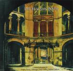

| Artist: | Various Artists |
| Title: | The Reading Room |
| Label: | LaBraD'or Records LBD 040007 |
| Length(s): | 74 minutes |
| Year(s) of release: | 2000 |
| Month of review: | [01\2000] |
| 1) | Brassé - The Reading Room | 10.11 |
| 2) | Galleon - The Private Space | 8.09 |
| 3) | The Night Watch - Silent Land | 6.48 |
| 4) | Aragon - The Last Supper | 8.10 |
| 5) | Like Wendy - The Empress | 6.32 |
| 6) | Final Conflict - The Janus | 7.48 |
| 7) | Maryson - Aiden | 10.19 |
| 8) | Galahad - The Pleasure House | 9.46 |
| 9) | Jacob's Ladder - Searching | 4.12 |
| 10) | Cliffhanger - Getting The Picture | 2.30 |
The track itself is a long one, opening with somewhat somber vocals. The style reminds me a bit of some of the doomy wave bands of the eighthies. The chorus is quite melodic and bombastic with rather heavy guitarwork by Maarten Huiskamp. The final solo is actually two, one for each ear. A good combination of energy and sinisterness. Galleon from Sweden is up next. Again a nice track. Some willowy piano in the middle, some slide guitars and the bombastic keyboards/guitars towards the end. The Night Watch made a favourable impression in the Netherlands with their debut, but since then little new was heard. This is their first appearance on record since that debut. A moody opening with the Gabriel styled vocals of Simone Rossetti, this is a somewhat claustrophobic sounding Genesis influenced track with plenty of mellotron and reversed percussion to add an air of mystery. The tense Crimsonesque guitars at the end come quite unexpectantly, and they introduce a new sense of menace in the music. The keyboards now tend more to ELP.
Sinisterness is something in which the follow-up Aragon is also quite at home. The opening of Last Supper however has aspects of a christmas song like Silent Night. Moody keyboards and quiet vocals. A softly humming bass, fast tinkling sounds and percussion still give the song an easy going aspect, but some pace has entered the music. The music becomes ever darker and more menacing with powerful guitar chords and the inescapable ticking of a clock. It is followed by a somewhat Middle Eastern sounding clear guitar solo which sounds out the song.
Like Wendy found time for another song (and also time to help master the album) in between his three solo album. The Empress is a romantic piece opening with interesting sounding double vocals and nicely fitting lyrics. Well done. The short chorus is not that interesting though. Easy percussion, piping keyboards, synth strings take us through this sleepy first part. In the second part Separated the mood stays relaxed, but the bombastic Kelly influences are there. The third part is vocal again and the vocal melody is magnificent this time. A heartbraking conclusion to this track.
Final Conflict was never reviewed on these pages (Jacob's Ladder was not either, but they have not released an album as far as I know). This English band makes a very good impression with The Janus, which in fact has two sides to it. This is one of the places where the music fits really well with the spoken vocals of Brassé. The manic vocals of the chorus contrast strongly with the easy-going verses. At the end we get a synergy, an introspection, with (church) organ and bouncy percussion. A rather optimistic ending, yet the laughing maniac of the chorus returns to leave us with an open ending.
Maryson is responsible for the following track, the longest on the track. Like their second album, I am not that fond of this track. It is too simple, too sweet, especially in the vocal parts. The song harbours some nice parts, which come past halfway where the music gets a sense of urgency. Fast keyboard runs make this perfect music for a chase. The melodramatic vocals return later on.
Galahad made a good impression with their last album, Following Ghosts, released some time ago. The music on this track is more typical of their earlier work, not so modern. The driving rhythm guitar is alternated with a waltzy chorus. The music simply follows the story of this track on the tail. The spoken words part has a likeness to the poem between Kayleigh and Lavender on Misplaced Childhood. The keyboards that follow nicely build up some tension with sizzling electronics.
Almost at the end of the concept album we close it with Searching by Jacob's Ladder. This features Maarten Huiskamp also of Vertigo. A very melodious and melodramatic track and one that does a good job of it.
The punningly titled Get The Picture does not fit on this album. Maybe that is why it is at the end. It is simply a short jazzy/groovy instrumental excursion that sounds more like live improvisation and actually leads me nowhere. Maybe meant as a kind of antidote to the foregoing.